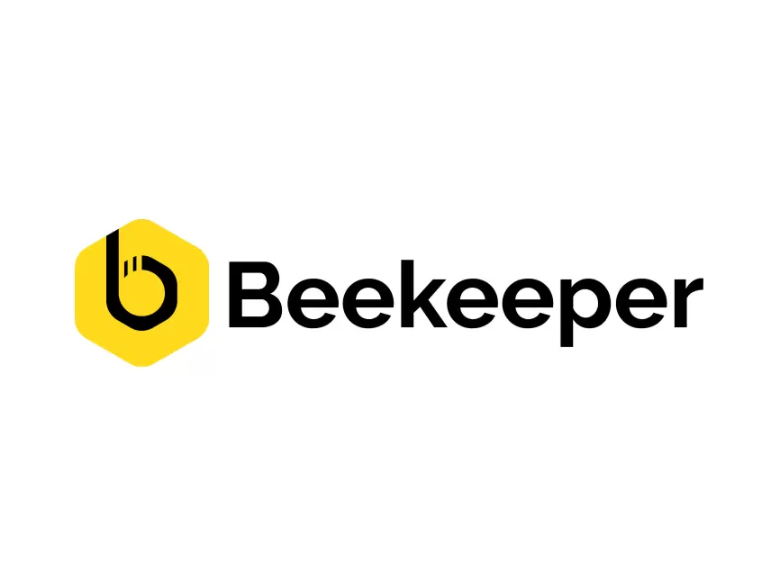

About Me
Hi, I’m Dzebu Denzhe, a dedicated software development student at WeThinkCode in Johannesburg, South Africa. I have hands-on experience with a variety of technologies, including Python, Java, JavaScript, HTML, and CSS, which I’ve used to build dynamic and responsive applications. I’ve also worked with Docker for containerization, Django for backend development, PostgreSQL, and Beekeeper Studio for database management. Currently, I’m deepening my knowledge of Node.js to enhance my backend development skills. My passion lies in leveraging these tools to create efficient, scalable, and user-friendly solutions. I’m always eager to learn new technologies and apply them to real-world challenges, pushing the boundaries of what’s possible in software development.

Previous Work
Languages I use frequently



Tools I use frequently